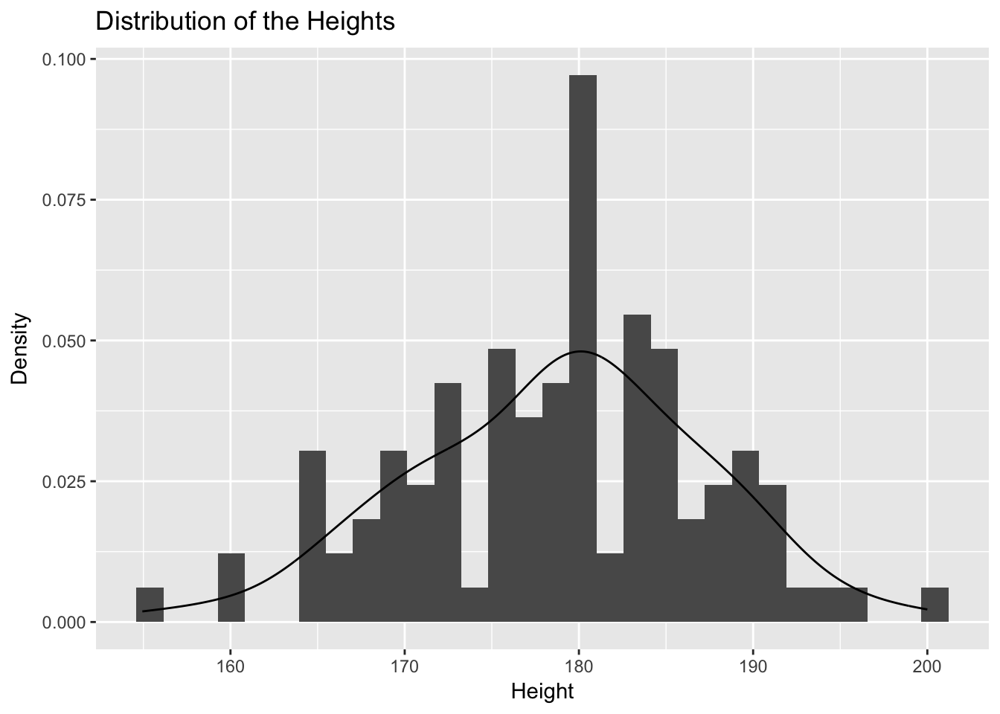
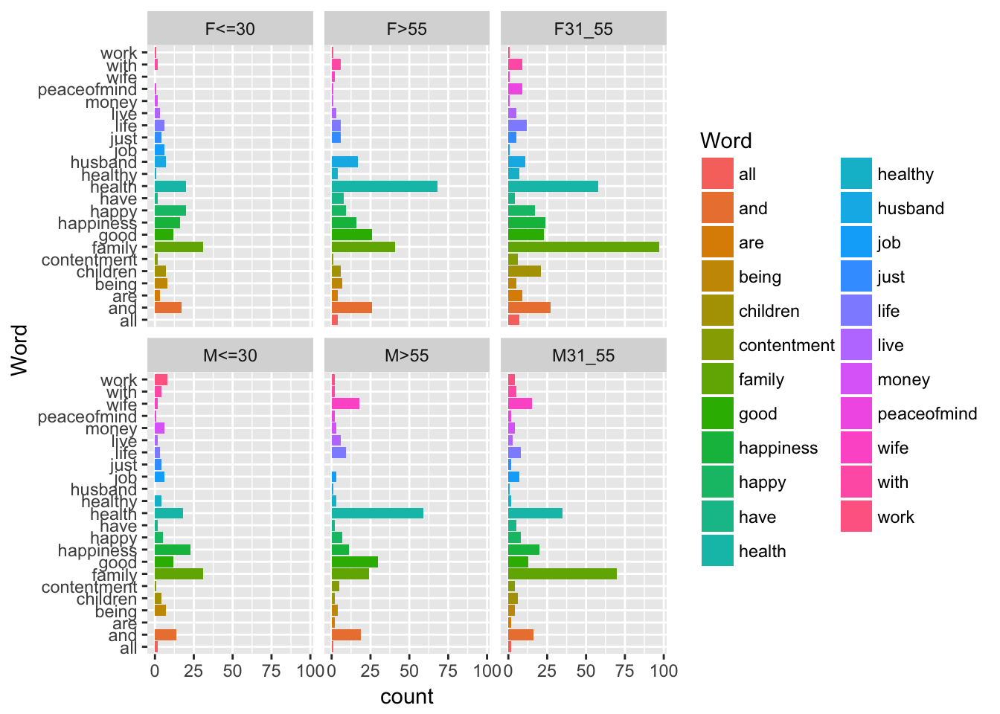

Chapter 7 Tests
7.1 Confidence intervals for a mean
Let \(X = (X_1,\ldots,X_n)'\) be i.i.d. independent Gaussian random variables with mean \(\mu\) and variance \(\sigma^2\). Assume first that \(\sigma^2\) is known and define \(\bar{X}_n = n^{-1}\sum_{i=1}^n X_i\). Note that: \[ \frac{\sqrt{n}}{\sigma}\,\left(\bar{X}_n-\mu\right) \sim \mathcal{N}(0,1)\,. \] Therefore, if, for \(\alpha\in(0,1)\), \(z_{\alpha}\) is the quantile of order \(\alpha\) of the law \(\mathcal{N}(0,1)\), \[ \mathbb{P}\left(\left|\frac{\sqrt{n}}{\sigma}\left(\bar{X}_n-\mu\right)\right|\le z_{1-\alpha/2}\right) = 1- \alpha\,. \] This means that \[\left[\bar X_n-\frac{\sigma}{\sqrt{n}} z_{1-\alpha/2} \ , \ \bar X_n+\frac{\sigma}{\sqrt{n}} z_{1-\alpha/2}\right]\] is a \(1-\alpha\) confidence interval for \(\mu\).
In the case where \(\sigma^2\) is unknown, it may be replaced by its unbiased estimator: \[ \widehat{\sigma}_n^2= \frac{1}{n-1}\sum_{i=1}^n\left(X_i - \bar X_n\right)^2 \] Then, \[ \frac{\sqrt{n}}{\widehat\sigma_n}\,\left(\bar{X}_n-\mu\right) = \frac{\sqrt{n}\left(\bar{X}_n-\mu\right) /\sigma}{\sqrt{\frac{1}{n-1}\frac{n-1}{\sigma^2}\widehat{\sigma}_n^2}}\,. \] As in the previous case, \[ \frac{\sqrt{n}}{\sigma}\,\left(\bar{X}_n-\mu\right) \sim \mathcal{N}(0,1)\,. \] On the other hand, let \(\mathbb{1}_n\) be the vector of \(\mathbb{R}^n\) with all entries equal to one, \(F_n = \mathrm{span}(\mathbb{1}_n)\) and \(P_{F_n}\) be the orthogonal projection on \(F_n\). Then, \[ P_{F_n} = \frac{1}{n}\mathbb{1}_n\mathbb{1}'_n\quad\mbox{and}\quad P_{F_n}X = \bar X_n \mathbb{1}_n\,. \] Let \(F^{\perp}_n\) be the orthogonal of \(F_n\) in \(\mathbb{R}^n\) and \(P_{F^{\perp}_n}\) the associated orthogonal projection. Then, \[ \frac{n-1}{\sigma^2}\,\widehat{\sigma}_n^2 = \frac{1}{\sigma^2}\|X-\bar X_n\mathbb{1}_n\|^2 = \frac{1}{\sigma^2}\|X-P_{F_n}X\|^2=\frac{1}{\sigma^2}\|P_{F^{\perp}_n}X\|^2\,. \] As \(\mu\mathbb{1}_n \in F_n\), \(P_{F^{\perp}_n}(\mu\mathbb{1}_n) = 0\) which yields: \[ \frac{n-1}{\sigma^2}\,\widehat{\sigma}_n^2 = \left\|P_{F^{\perp}_n}\left(\frac{X-\mu\mathbb{1}_n}{\sigma}\right)\right\|^2\,. \] Similarly, \[ \sigma^{-1}\,\left(\bar{X}_n-\mu\right) = P_{F_n}\left(\frac{X-\mu\mathbb{1}_n}{\sigma}\right)\,. \] By Cochran’s theorem \(\sigma^{-1}\,\left(\bar{X}_n-\mu\right)\) and \(\widehat{\sigma}_n^2\) are independent and \[ \frac{n-1}{\sigma^2}\,\widehat{\sigma}_n^2\sim \chi^2(n-1)\,, \] where \(\chi^2(n-1)\) is the chi-squared distribution with \(n-1\) degrees of freedom. Therefore, \[ \frac{\sqrt{n}}{\widehat{\sigma}_n}\,\left(\bar{X}_n-\mu\right) \sim T(n-1)\,, \] \(T(n-1)\) is the Student’s \(t\)-distribution with \(n-1\) degrees of freedom. A \(1-\alpha\) confidence interval for \(\mu\) is then given by: \[\left[\bar X_n-\frac{\widehat\sigma_n}{\sqrt{n}} t_{1-\alpha/2}(n-1) \ , \ \bar X_n+\frac{\hat\sigma_n}{\sqrt{n}} t_{1-\alpha/2}(n-1)\right]\,,\] where \(t_{1-\alpha/2}(n-1)\) is the quantile of order \(1-\alpha/2\) of the law \(T(n-1)\). It is important to remember that the procedure assumes that the estimator of the mean \(\bar X_n\) follows a normal distribution. This is true if the \((X_i)_{1\le i \le n}\) follow a normal distribution or if the sample size is large enough (in practice \(n>30\), thanks to the central limit theorem).
We shall examine the average height of adults. This example is inspired by a study made by the French Institute of Textile and Apparel. They measured a sample of people to update the reference clothing system. Such studies have a huge economical impact since they impact many sectors: the car industry (to modify the seats of the cars), the hospitals (to modify the stretcher), etc.
We have access to a sample of 119 men. For the overall population, we would like to obtain an estimation of the mean of the height and a confidence interval for this mean at 95%.
library(MASS)
library(ggplot2)
data(survey)
HeightM <-survey[survey[, "Sex"]=="Male", "Height", drop = FALSE]
ggplot(HeightM) + aes(x = Height) + geom_histogram(aes( y = ..density..))+ labs(y = "Density", x = "Height") + geom_line(stat="density") + ggtitle("Distribution of the Heights")## `stat_bin()` using `bins = 30`. Pick better value with `binwidth`.
# qqnorm(scale( na.omit(HeightM$Height)))
# qqline(scale( na.omit(HeightM$Height)))This distribution is not far from a normal distribution and the sample size is 106 so that we can pursue the analysis. For small samples, the normality of the sample should be tested, rather than that of the mean. In order to do so, the Shapiro-Wilk test could be used. If normality is refused, we can construct a confidence interval using for example a bootstrap (we will study this later) procedure.
The confidence interval is calculated using the function t.test:
res <- t.test(HeightM$Height, conf.level = 0.95)
res##
## One Sample t-test
##
## data: HeightM$Height
## t = 219.7, df = 105, p-value < 2.2e-16
## alternative hypothesis: true mean is not equal to 0
## 95 percent confidence interval:
## 177.2121 180.4400
## sample estimates:
## mean of x
## 178.826res$conf.int## [1] 177.2121 180.4400
## attr(,"conf.level")
## [1] 0.95Strictly speaking, the unknown mean \(\mu\) of \(X\), estimated to be \(178.8\) cm, either does or does not belong to the interval \([177.21, 180.44]\). It is therefore within the interval with a probability of 0 or 1. However, the procedure as a whole guarantees that, if it is repeated infinitely with new samples of the same size \(n=106\), then 95% of the confidence intervals will contain the true unknown value of \(\mu\).
Practice Calculate the confidence interval “by hand’’ by calculating the quantile 97.5% of the Student’s \(t\)-distribution with the appropriate number of degrees of freedom.
7.2 Mean comparison
Let us test the equality of the means of two sub-populations: \((X_i)_{1\le i \le n_1}\) i.i.d. with distribution \(\mathcal{N}(\mu_1,\sigma_1^2)\) independent from \((\tilde X_i)_{1\le i \le n_2}\) wich are i.i.d. with distribution \(\mathcal{N}(\mu_2,\sigma_2^2)\). We test the hypothesis \(H_0: \mu_1=\mu_2\) against the alternative hypothesis \(H_1: \mu_1\ne \mu_2\) (or \(H_1: \mu_1> \mu_2\) or \(H_1: \mu_1< \mu_2\)). Define: \[ \bar X_{1} = \frac{1}{n_1}\sum_{i=1}^{n_1}X_i\quad\mbox{and}\quad\,\bar X_{2} = \frac{1}{n_2}\sum_{i=1}^{n_2}\tilde X_i. \] First, in the case where \(\sigma_1^2 = \sigma_2^2 = \sigma^2\) is known, \[ \bar X_{1} - \bar X_{2} - \mu_1 - \mu_2 \sim \mathcal{N}(0,\sigma^2(n_1^{-1}+n_2^{-1})) \] so that \[ \sqrt{\frac{n_1 n_2}{\sigma^2(n_1+n_2)}}\left(\bar X_{1} - \bar X_{2} - \mu_1 - \mu_2\right) \sim \mathcal{N}(0,1)\,. \] Under \(H_0\) the test statistic is \[ T_{n_1,n_2} = \sqrt{\frac{n_1 n_2}{\sigma^2(n_1+n_2)}}\left(\bar X_{1} - \bar X_{2}\right)\,. \] Therefore the rejection region of a statistical test of signifiance level \(\alpha\) is given by: \[ \left\{t\in \mathbb{R}\,;\,|t|>z_{1-\alpha/2}\right\}\,. \] When \(\sigma_1^2\) and \(\sigma_2^2\) are unknown, in order to carry out this test, we have to know if the variances \(\sigma_1^2\) and \(\sigma^2_2\) in each sub-population are equal or not. Consequently, we have first to test the hypothesis \(H_0: \sigma_1^2=\sigma_2^2\) against the alternative hypothesis \(H_1: \sigma_1^2 \ne \sigma_2^2\). Consider the unbiased estimators: \[ \widehat{\sigma}_{1}^2=\frac{1}{n_1-1}\sum_{i=1}^{n_1}\left(X_i - \bar X_{1}\right)^2 \] and \[ \widehat{\sigma}_{2}^2= \frac{1}{n_2-1}\sum_{i=1}^{n_2}\left(\tilde X_i - \bar X_{2}\right)^2\,. \] By Cochran’s theorem, \[ \frac{n_1-1}{\sigma_1^2}\,\widehat{\sigma}_{1}^2\sim \chi^2(n_1-1)\,, \] and \[ \frac{n_2-1}{\sigma_2^2}\,\widehat{\sigma}_{2}^2\sim \chi^2(n_2-1)\,. \] As the two populations are independent, the test statistic is \[ F_{n_1,n_2}=\frac{\hat\sigma_{1}^2}{\hat\sigma_{2}^2}\,. \] Under the null hypothesis this quantity follows a Fisher distribution with respectively \(n_1-1\) and \(n_2-1\) degrees of freedom (where \(n_1\) and \(n_2\) are the sample size in each sub-population).
If we accept the equality of the two variances, we test the equality of the two means using the following \(t\)-test. An estimator for the variance of the difference (\(\bar X_{n_1}-\bar Y_{n_2}\)) is \[\widehat\sigma_{n_1,n_2}^2=\frac{(n_1-1)\widehat\sigma_{1}^2+(n_2-1)\widehat\sigma_{2}^2}{n_1+n_2-2}\left(\frac{1}{n_1}+\frac{1}{n_2}\right)\,. \] The test statistic is \[T_{n_1,n_2}=\frac{\bar X_{1}-\bar X_{2}}{\widehat\sigma_{n_1,n_2}} \] and, under the null hypothesis (\(H_0: \mu_1=\mu_2\)), this quantity follows a Student’s \(t\)-distribution with \(n_1+n_2-2\) degrees of freedom.
Do you know the history of Student’s test and who was Student?
If we reject the equality of the two variances, we test the equality of the two means using the Welch’s \(t\)-test. The variance of the difference (\(\bar X_{1}-\bar X_{2}\)) is equal to \(\hat\sigma_D^2=\frac{\hat\sigma_1^2}{n_1}+\frac{\hat\sigma_2^2}{n2}\). The test statistic is \(T = \frac{\bar X_{1}-\bar X_{2}}{\hat\sigma_D}\) and, under the null hypothesis (\(H_0: \mu_1 = \mu_2\)), this quantity follows a Student’s \(t\) distribution with \(\nu\) degrees of freedom, where \[ \frac{1}{\nu}=\frac{1}{n_1-1}\left(\frac{\hat\sigma_1^2/n_1}{\hat\sigma_D^2}\right)^2+\frac{1}{n_2-1}\left(\frac{\hat\sigma_2^2/n_2}{\hat\sigma_D^2}\right)^2\,. \] There are many exemples of cases of mean comparisons. Famous exemples include pharmaceutical labs that suggest a new drug and compare it to a placebo (neither the patient nor the doctor know what he received). You can compare two diets, the salary of people coming from different universities, the impact of two differents adds, etc.
Here, we use the Hospital data that was used in Homework exploratory analysis. We compare the systolic blood pressure of people with hemorrhagic shock and of people without hemorrhagic shock. The data can be imported as follows:
TB <- read.csv(file="trauma",sep=',',header = TRUE, na.strings = c("","NR","IMP","NA","NF"), encoding = "UTF-8", row.names = NULL)
colnames(TB)[1] <- "Shock"
colnames(TB)[2] <- "PAS"Before any analysis, it is important to summarize and visualize the data. First, we can calculate the descriptive statistics for each sub-population for instance with the ‘tapply’ function as follows, using the argument ‘na.rm’ to remove the missing values in the calculation:
Shock = as.factor(TB[,"Shock"])
tapply(TB[,"PAS"], Shock, mean, na.rm = TRUE)
tapply(TB[,"PAS"],Shock, sd, na.rm = TRUE)
tapply(TB[,"PAS"],Shock, quantile, na.rm = TRUE)Note that ‘tapply’ does is similar to ‘by’ but requires a vector as an input and not a data frame.
library(ggplot2)
PASdata <-cbind.data.frame(TB[,"PAS"], Shock)
colnames(PASdata)[1]<-"PAS"
ggplot(PASdata, aes(Shock, PAS)) + geom_boxplot()Then, if necessary, we can test the normality of the data in each sub-population. In order to construct the comparison of means test, we assume that the mean estimator in each sub-population follows a normal distribution. This is true if the data is normally distributed or if the sample size is large enough (in practice greater than 30, thanks to the central limit theorem). Otherwise, the Shapiro-Wilk test is used (shapiro.test). If the assumption of normality is rejected, the test of equality of means can be conducted using non-parametric tests such as that of Wilcoxon or Kruskal-Wallis.
7.2.1 Testing the equality of variances
In order to compare the mean of the sub-populations there are two possible types of tests: one in which the unknown variances of the two sub-populations are different and the other in which they are equal. We must therefore test the equality of variances using a \(F\)-test:
var.test(TB[,"PAS"] ~ Shock, conf.level=.95)The \(p\)-value associated with the test of comparison of variances is less than 2.2e-16: \(H_0\) can be rejected. The variance ratio (\(\hat\sigma_1/\hat\sigma_2\)) is 0.61 and the confidence interval for this ratio (to 95%) is \([0.54 ;0.68]\). In the variance ratio, the numerator is the variance of the first level of the variable Shock (no shock) and the denominator the variance of second level of the Shock variable.
7.2.2 Testing the equality of means
Here we use the ‘t.test’ function. If the variances are equal, the Student test is used, otherwise it would be Welch’s test to compare the means. In order to do so, specify that the variances are equal or not using the argument ‘var.equal=TRUE’. The default test is bilateral ‘alternative= “two.sided”’ , however the alternative hypothesis \(H_1\) may be that people with Shock have smaller ‘alternative=“less”’ or higher ‘alternative=“greater”’ blood pressure. We here consider the category of reference to be 0 (first level of the variable Shock) and the other category is tested according to this reference.
t.test(PAS ~ Shock, alternative = 'two.sided', conf.level = .95,
var.equal = FALSE, data = PASdata)The \(p\)-value < 2.2e-16 associated with the test of unequal variances indicates that the means are significantly different. The mean of the “no shock” group (estimated at 128.56566) is thus significantly different to that of the shock group (estimated at 97.13246).
If we need to compare more than two means, a number of tests are available. The choice of the test depends on whether or not the variances in each sub-population are equal. If the variances are equal, you can use analysis of variance (anova: the equivalent of regression but where the explanatory variable is categorical). If the variances are unequal, use the function ‘oneway.test’. Bartlett’s test can be used to test equality of variances.
7.3 Some comments on \(p\)-values
The \(p\)-value is the probability of getting data as or more extreme than the observed data assuming that the null is true. “How likely would it be to get a statistic this large or larger if the null was actually true?”. A very small p-value means “very unlikely” and so it sheds doubt on the null being true. Either the null is true and you have seen a rare event or the null is false.
To perform a test at a Type I error rate, we compare the \(p\)-value to the desired Type I error rate and if the \(p\)-value is smaller, reject the null hypothesis.
The \(p\)-value has often been extensively used (and missused) to support scientific claims but without enough care so that it has lead to many flawed claims which casted doubt on science (we have even spoken about crisis in science). At some point, some scientific journals have even discouraged the use of \(p\)-values.
One reason of the problem is related to multiple testing issues.
The american statistical association has published in June 2016 a statement on p-value to clarify the issues. Latest twist on the topic! Look at the [science article] (http://www.sciencemag.org/news/2017/07/it-will-be-much-harder-call-new-findings-significant-if-team-gets-its-way) to get the \(p\)-value at 0.005.
7.4 Power
Let’s consider the power of the test of equality of means of two sub-populations. The test of equality of means is used to choose between the hypothesis \(H_0: \mu_1=\mu_2\) and the alternative hypothesis \(H_1: \mu_1\ne \mu_2\) (or \(H_1: \mu_1> \mu_2\) or \(H_1: \mu_1< \mu_2\)). The power of the test is the probability of rejecting the hypothesis \(H_0\) when \(H_1\) is true. Power is equal to \(1-\beta\), \(\beta\) being the type-two error (that is to say the risk of mistakenly accepting \(H_0\)). The power therefore corresponds to the probability of detecting a difference in means, if indeed this difference exists. The advantage of calculating the power of a test prior to conducting an experiment lies mainly in the ability to optimize the number of trials (i.e. statistical individuals) according to the aim of the experimenter. Indeed, the power of the test is directly related to: the number of individuals per group (\(n\)), the amplitude of the difference that we want to detect (\(\delta\)), the within-group variability (\(\sigma\)), and the type-one error (\(\alpha\)).
We shall examine the example of an experiment in milk production. Researchers at INRA (the French National Institute for Agricultural Research) selected two genetically different types of dairy cows according to the volume of milk produced. The aim was to detect a potential difference in the protein levels in the milks produced by these two sub-populations.
During a previous study, the standard deviation of protein levels in the milk from a herd of Normandy cows was found to be \(1.7\) g\(/\)kg of milk. As an approximation we will therefore use the standard deviation \(\sigma=1.7\) and use the classical \(\alpha=5\%\) threshold. The aim is to have \(\beta=80\)% chance of detecting a difference in the means of the protein levels of \(\delta=1\) g\(/\)kg of milk from the two populations. To meet this objective, we will determine the number of dairy cows required using the function ‘power.t.test’.
To calculate the number of individuals required to obtain a power of 80%, we proceed as follows:
power.t.test(delta = 1, sd = 1.7, sig.level = 0.05, power = 0.8)##
## Two-sample t test power calculation
##
## n = 46.34674
## delta = 1
## sd = 1.7
## sig.level = 0.05
## power = 0.8
## alternative = two.sided
##
## NOTE: n is number in *each* groupHere we can see that a minimum of 47 individuals are required per population in order to have more than an 80% chance of detecting a difference in means in the protein levels of 1 g\(/\)kg of milk between the two populations.
With 20 individuals per group, the power of the test is:
power.t.test(n = 20, delta = 1, sd = 1.7, sig.level = 0.05)$power## [1] 0.4416243If we decide to use only 20 cows per population in the experiment, there will be a 44% chance of detecting a difference in means in the protein levels of 1 g\(/\)kg of milk between the two populations.
The difference detectable at 80% with 20 individuals per group can be calculated as:
power.t.test(n=20, sd=1.7, sig.level=0.05, power=0.8)$delta## [1] 1.545522If we decide to use only 20 cows per population in the experiment, there will then be an 80% chance of detecting a difference in means in the protein levels of 1.55 g\(/\)kg of milk between the two populations.
To wrap-up, tests are designed to control Type I error (rejecting the null hypothesis when it’s true). Type II error is when we fail to reject when H1 is true and the power is 1 - Type II error (probability of rejecting the null when it is false).
7.5 Chi-square tests
7.5.1 Goodness of fit
Let \((X_i)_{1\le i \le n}\) be \(n\) i.i.d observations taking values in \(\{0,1\}^m\). The distribution of each \(X_i\) is a multinomial distribution with unknown parameter \(\pi = (\pi_1,\ldots,\pi_m)\) and we want to test if \(\pi\) is equal to a given probability distribution \(p\) on \(\{1,\ldots,m\}\).
The null hypothesis is \(H_0: \pi = p\) and the alternative \(H_1: \pi\ne p\). For all \(1\le k \le m\) let \(N_k\) be defined as the number of observations such that the \(k\)-th entry is one. Pearson’s test statistic is given by: \[ T_n = \sum_{k=1}^m \frac{\left(N_k - np_k\right)^2}{n p_k}\,. \] When \(H_0\) is true, as \(n\) goes to infinity, \(T_n\) converges in distribution to a \(\chi^2(m-1)\) distribution. If \(w_{\alpha}(m-1)\) is the quantile of order \(\alpha\) of the law \(\chi^2(m-1)\), the rejection region of a statistical test of signifiance level \(\alpha\) is given by: \[ \left\{t\in \mathbb{R}\,;t>w_{1-\alpha}(m-1)\right\}\,. \] To prove that \(T_n\) converges in distribution to a \(\chi^2(m-1)\) distribution, first note that, under \(H_0\), for all \(1\le i \le n\), the random vector \(X_i\) is such that: \[ \mathbb{E}[X_i] = p\quad\mbox{and}\quad \mathrm{Cov}(X_i) = \Sigma\,, \] where \(\Sigma_{i,i} = p_i(1-p_i)\) and for \(1\le i <j \le m\), \(\Sigma_{i,j} = -p_ip_j\). By the central limit theorem, \(\sqrt{n}\left(\bar X_n - p \right)\) converges in distribution to a Gaussian random vector with mean \(0\) and covariance matrix \(\Sigma\). Define \(\Lambda = \mathrm{diag}(p)\) and \(Z_n = \sqrt{n}\Lambda^{-1/2}(\bar X_n -p)\) so that \[ T_n = \|Z_n\|^2\,. \] Note that \(Z_n\) converges in distribution to a Gaussian random vector with mean \(0\) and covariance matrix \(\Lambda^{-1/2}\Sigma\Lambda^{-1/2}\). As \(\Sigma = \Lambda - pp'\), \[ \Lambda^{-1/2}\Sigma\Lambda^{-1/2} = \Lambda^{-1/2}\left(\Lambda - pp'\right)\Lambda^{-1/2} = I_m - qq'\,, \] where \(q = (\sqrt{p_1},\ldots,\sqrt{p_m})'\). \(\Lambda^{-1/2}\Sigma\Lambda^{-1/2}\) is an orthogonal projection onto a subspace \(F\) such that \(\mathrm{dim}(F) = \mathrm{trace}(\Lambda^{-1/2}\Sigma\Lambda^{-1/2}) = m-1\) wich proves that \(T_n\) converges in distribution to a \(\chi^2(m-1)\) distribution.
7.5.2 Independence test
Chi-square test can be used to test the independence between two qualitative variables. The data can be represented in a contingency table (two-way table).
To test the independence of two qualitative variables, we test the null hypothesis \(H_0\): the two variables are independent against the alternative hypothesis \(H_1\): the two variables are not independent. In order to do so, we calculate the following test statistic: \[T_n=\sum_{i=1}^I\sum_{j=1}^J\frac{(n_{ij}-T_{ij})^2}{T_{ij}},\] where \(n_{ij}\) is the number of individuals (observed frequency) who take the category \(i\) of the first variable and the category \(j\) of the second, and \(T_{ij}\) corresponds to the expected frequency under the null hypothesis. \(I\) and \(J\) are the number of categories for each of the variables. Thus, \(T_{ij}=n\hat p_{i\bullet}\hat p_{\bullet j}\) with \(n\) the total sample size, \(\hat p_{i\bullet}=\frac{\sum_j n_{ij}}{n}\) and \(\hat p_{\bullet j}=\frac{\sum_i n_{ij}}{n}\). Under \(H_0\), \[T_n\xrightarrow[n\to\infty]{\cal L}\chi_{(I-1)\times(J-1)}^2,\] under \(H_1\), \[T_n\xrightarrow[n\to\infty]{p.s.}+\infty.\]
\(H_0\) is rejected when the observation \(t_n\) of the test statistic takes a large value.
If there is no independence, it is interesting to calculate the contribution of pairs of categories to the chi-square statistic in order to highlight associations between categories.
As an exemple, we consider text data about What is the most important in life for you? This question was included in a multinational survey conducted in seven countries (Japan, France, Germany, Italy, Nederland, United Kingdom, USA). We start with the answers of 1043 persons in the UK. In addition, many background observations such as their socio-economic and demographic characteristics are available (Age, Education, Sex, etc). Here an extract of the data:
Our objective is to analyze the preoccupation in life depending on the age, gender, etc. The data analyzed here are an aggregation according to Sex-Age.
preocupation <- read.table("data/Sex_Age.csv", header = T)
preocupation[,c(5, 7:9, 12)]## children family good happiness health
## F<=30 7 31 12 16 20
## F>55 6 41 26 16 68
## F31_55 21 97 23 24 58
## M<=30 4 31 12 23 18
## M>55 2 24 30 11 59
## M31_55 6 70 13 20 35The original data can be found here:
base <- read.csv("http://juliejosse.com/wp-content/uploads/2016/01/Hasa.csv",
sep = ",", header = TRUE, dec = ".")To get the aggregated data that we analyze, we processed the text (words smaller than 3 where not included, words with frequency <15 were excluded, such choices can be discussed but are part of the analysis of text data).
We would like to know if the preocupation is independent of the SexAge variable with a type-one error rate of 5%. If it does depend on SexAge, we would like to study the association between categories, for example to know which are the categories which are more interested by their job.
Practice Create a data frame from the contingency table with only two variables SexCat and Word. It would be easier to use ggplot with such a data set.
don[c(1:5, 30:35), ]
AgeSex Word
1 F<=30 and
2 F<=30 and
3 F<=30 and
4 F<=30 and
5 F<=30 and
30 F<=30 children
31 F<=30 children
32 F<=30 children
33 F<=30 children
34 F<=30 children
35 F<=30 childrenggplot(data=don, aes (x = Word)) + geom_bar() We can enhance the plot using the The reorder function which reorders the levels of a factor. It can be reordered based on the values of numeric variable:
stest <- data.frame(group=c("John", "Jane", "James", "John"), mean=c(3, 5, 1, 3))
stest## group mean
## 1 John 3
## 2 Jane 5
## 3 James 1
## 4 John 3levels(stest$group)## [1] "James" "Jane" "John"stest$group <- reorder(stest$group, stest$mean)
stest## group mean
## 1 John 3
## 2 Jane 5
## 3 James 1
## 4 John 3levels(stest$group)## [1] "James" "John" "Jane"stest$group <- reorder(stest$group, -stest$mean)
stest## group mean
## 1 John 3
## 2 Jane 5
## 3 James 1
## 4 John 3levels(stest$group)## [1] "Jane" "John" "James"reorder can also take as argument a factor X to be reordered, a vector Y and a function FUN that takes a vector as argument and returns a scalar. FUN will be applied to the subsets of Y determined by the levels of X and the levels of X will be ordered according to the value of FUN on each subset. Example:
stest <- data.frame(group=c("Jane", "John", "Jane", "James" ,"James", "John"), mean=c(5, 3, 5, 1, 1, 3))
stest## group mean
## 1 Jane 5
## 2 John 3
## 3 Jane 5
## 4 James 1
## 5 James 1
## 6 John 3levels(stest$group)## [1] "James" "Jane" "John"Y1 <- c(1,2,3,4,5,6)
stest$group <- reorder(stest$group, Y1, mean)
stest## group mean
## 1 Jane 5
## 2 John 3
## 3 Jane 5
## 4 James 1
## 5 James 1
## 6 John 3levels(stest$group)## [1] "Jane" "John" "James"stest <- data.frame(group=c("John", "John", "Jane", "James" ,"James", "John"), mean=c(5, 3, 5, 1, 1, 3))
Y2 <- factor(c("John", "John", "Jane", "James" ,"James", "John"))
stest$group <- reorder(stest$group, Y2, length)
stest## group mean
## 1 John 5
## 2 John 3
## 3 Jane 5
## 4 James 1
## 5 James 1
## 6 John 3levels(stest$group)## [1] "Jane" "James" "John"ggplot(data=don, aes (x = reorder(Word, Word, length))) + geom_bar() +
coord_flip() + xlab("Words")
The Cleveland dots are a lighter way to display counts
clev <-ggplot(data=don, aes (x = reorder(Word, Word, length))) + geom_point(stat = "count") + coord_flip() +
theme(panel.grid.major.x = element_blank() ,
panel.grid.major.y = element_line(linetype = "dotted", color = "darkgray")) + xlab("Words")
library(plotly)##
## Attaching package: 'plotly'## The following object is masked from 'package:ggplot2':
##
## last_plot## The following object is masked from 'package:MASS':
##
## select## The following object is masked from 'package:stats':
##
## filter## The following object is masked from 'package:graphics':
##
## layoutggplotly(clev)## We recommend that you use the dev version of ggplot2 with `ggplotly()`
## Install it with: `devtools::install_github('hadley/ggplot2')`Information for the ’ggplot theme" is available on the book website
Let’s represent the distribution of the words according to the SexAge variable:
ggplot(data=don, aes (x = Word, fill= Word)) + geom_bar() + coord_flip() + facet_wrap(~AgeSex)
aa= as.data.frame(
sweep(table(don[, c("AgeSex","Word")]),2, colSums(table(don[, c("AgeSex","Word")])), FUN = "/"))
ggplot(data=aa, aes(x=Word, y= Freq, fill= Word)) +geom_bar(stat = "identity")+ facet_wrap(~AgeSex)+ coord_flip() + xlab("")To explore the data, it can be interesting to calculate the row and column profiles. First calculate the joint frequencies, that is to say the percentages \(n_{ij}/n\):
## all and are being children contentment family good happiness happy
## F<=30 0.0 1.2 0.2 0.6 0.5 0.1 2.2 0.9 1.1 1.4
## F>55 0.3 1.8 0.3 0.5 0.4 0.1 2.9 1.8 1.1 0.6
## F31_55 0.5 1.9 0.6 0.4 1.5 0.4 6.9 1.6 1.7 1.2
## M<=30 0.1 1.0 0.0 0.5 0.3 0.1 2.2 0.9 1.6 0.4
## M>55 0.1 1.4 0.1 0.3 0.1 0.4 1.7 2.1 0.8 0.5
## M31_55 0.1 1.1 0.1 0.3 0.4 0.3 5.0 0.9 1.4 0.6
## have health healthy husband job just life live money peaceofmind
## F<=30 0.1 1.4 0.1 0.5 0.4 0.3 0.4 0.2 0.1 0.1
## F>55 0.6 4.8 0.3 1.2 0.0 0.4 0.4 0.2 0.1 0.1
## F31_55 0.3 4.1 0.5 0.8 0.1 0.4 0.9 0.4 0.1 0.6
## M<=30 0.1 1.3 0.3 0.0 0.4 0.3 0.2 0.1 0.4 0.1
## M>55 0.1 4.2 0.2 0.1 0.2 0.0 0.6 0.4 0.2 0.1
## M31_55 0.4 2.5 0.1 0.1 0.5 0.1 0.6 0.2 0.3 0.1
## wife with work
## F<=30 0.0 0.1 0.1
## F>55 0.1 0.4 0.1
## F31_55 0.1 0.6 0.1
## M<=30 0.1 0.3 0.6
## M>55 1.3 0.1 0.1
## M31_55 1.1 0.4 0.3The row profiles (\(n_{ij}/\sum_j n_{ij}\)) are calculated by using the prop.table function and the argument margin = 1. You can have a look at the function you use.
prop.table## function (x, margin = NULL)
## {
## if (length(margin))
## sweep(x, margin, margin.table(x, margin), "/", check.margin = FALSE)
## else x/sum(x)
## }
## <bytecode: 0x7feefc70dd40>
## <environment: namespace:base>Note that, to use this function, the dataset must be a matrix. kable is a function of knitr to display nice tables. The column profiles are calculated in the same way (\(n_{ij}/\sum_i n_{ij}\))
library(knitr)
kable(round(100 * prop.table(as.matrix(preocupation), margin = 1), 1))| all | and | are | being | children | contentment | family | good | happiness | happy | have | health | healthy | husband | job | just | life | live | money | peaceofmind | wife | with | work | |
|---|---|---|---|---|---|---|---|---|---|---|---|---|---|---|---|---|---|---|---|---|---|---|---|
| F<=30 | 0.0 | 9.9 | 1.8 | 4.7 | 4.1 | 1.2 | 18.1 | 7.0 | 9.4 | 11.7 | 1.2 | 11.7 | 0.6 | 4.1 | 3.5 | 2.3 | 3.5 | 1.8 | 1.2 | 0.6 | 0.0 | 1.2 | 0.6 |
| F>55 | 1.5 | 9.9 | 1.5 | 2.7 | 2.3 | 0.4 | 15.6 | 9.9 | 6.1 | 3.4 | 3.0 | 25.9 | 1.5 | 6.5 | 0.0 | 2.3 | 2.3 | 1.1 | 0.4 | 0.4 | 0.8 | 2.3 | 0.4 |
| F31_55 | 1.9 | 7.5 | 2.5 | 1.4 | 5.8 | 1.7 | 26.9 | 6.4 | 6.7 | 4.7 | 1.1 | 16.1 | 1.9 | 3.1 | 0.3 | 1.4 | 3.3 | 1.4 | 0.3 | 2.5 | 0.3 | 2.5 | 0.3 |
| M<=30 | 1.3 | 8.8 | 0.0 | 4.4 | 2.5 | 0.6 | 19.5 | 7.5 | 14.5 | 3.1 | 1.3 | 11.3 | 2.5 | 0.0 | 3.8 | 2.5 | 1.9 | 1.3 | 3.8 | 0.6 | 1.3 | 2.5 | 5.0 |
| M>55 | 0.5 | 8.8 | 0.9 | 1.9 | 0.9 | 2.3 | 11.2 | 14.0 | 5.1 | 3.3 | 0.9 | 27.4 | 1.4 | 0.5 | 1.4 | 0.0 | 4.2 | 2.8 | 1.4 | 0.9 | 8.4 | 0.9 | 0.9 |
| M31_55 | 0.8 | 6.7 | 0.8 | 1.7 | 2.5 | 1.7 | 29.4 | 5.5 | 8.4 | 3.4 | 2.1 | 14.7 | 0.8 | 0.4 | 2.9 | 0.8 | 3.4 | 1.3 | 1.7 | 0.8 | 6.3 | 2.1 | 1.7 |
kable(round(100 * prop.table(as.matrix(preocupation), margin = 2), 1))| all | and | are | being | children | contentment | family | good | happiness | happy | have | health | healthy | husband | job | just | life | live | money | peaceofmind | wife | with | work | |
|---|---|---|---|---|---|---|---|---|---|---|---|---|---|---|---|---|---|---|---|---|---|---|---|
| F<=30 | 0.0 | 14.3 | 15 | 22.9 | 15.2 | 10.5 | 10.5 | 10.3 | 14.5 | 30.3 | 8.7 | 7.8 | 4.8 | 18.9 | 26.1 | 19.0 | 13.6 | 13.6 | 11.8 | 6.2 | 0.0 | 7.1 | 5.9 |
| F>55 | 25.0 | 21.8 | 20 | 20.0 | 13.0 | 5.3 | 13.9 | 22.4 | 14.5 | 13.6 | 34.8 | 26.4 | 19.0 | 45.9 | 0.0 | 28.6 | 13.6 | 13.6 | 5.9 | 6.2 | 5.3 | 21.4 | 5.9 |
| F31_55 | 43.8 | 22.7 | 45 | 14.3 | 45.7 | 31.6 | 33.0 | 19.8 | 21.8 | 25.8 | 17.4 | 22.5 | 33.3 | 29.7 | 4.3 | 23.8 | 27.3 | 22.7 | 5.9 | 56.2 | 2.6 | 32.1 | 5.9 |
| M<=30 | 12.5 | 11.8 | 0 | 20.0 | 8.7 | 5.3 | 10.5 | 10.3 | 20.9 | 7.6 | 8.7 | 7.0 | 19.0 | 0.0 | 26.1 | 19.0 | 6.8 | 9.1 | 35.3 | 6.2 | 5.3 | 14.3 | 47.1 |
| M>55 | 6.2 | 16.0 | 10 | 11.4 | 4.3 | 26.3 | 8.2 | 25.9 | 10.0 | 10.6 | 8.7 | 22.9 | 14.3 | 2.7 | 13.0 | 0.0 | 20.5 | 27.3 | 17.6 | 12.5 | 47.4 | 7.1 | 11.8 |
| M31_55 | 12.5 | 13.4 | 10 | 11.4 | 13.0 | 21.1 | 23.8 | 11.2 | 18.2 | 12.1 | 21.7 | 13.6 | 9.5 | 2.7 | 30.4 | 9.5 | 18.2 | 13.6 | 23.5 | 12.5 | 39.5 | 17.9 | 23.5 |
This yields the distributions of words according to AgeSex which are represented in the previous graph. It seems that there are differences between the profiles, that we may confirm using a test.
results <- chisq.test(preocupation)## Warning in chisq.test(preocupation): Chi-squared approximation may be
## incorrectresults##
## Pearson's Chi-squared test
##
## data: preocupation
## X-squared = 316.17, df = 110, p-value < 2.2e-16Why do we have a warning?
Practice Compute by hand the \(p\).value.
The \(p\)-value indicates that such a big \(\chi^2_{obs}\) value would have < 2.2e-16% probability of being observed in a sample of this size if AgeSex were independent of words. Thus, at the 5% threshold, we reject the independence hypothesis and conclude that, according to this dataset, AgeSex depends on words.
This relationship between the two variables can be studied in greater details by calculating the contributions \(\frac{(n_{ij}-T_{ij})^2}{T_{ij}}\) to the \(\chi^2_{obs}\) statistic. The squared roots of these contributions are in the object ‘residuals’. By dividing each term by the total (i.e. the \(\chi^2_{obs}\) value contained in the ‘stat’ object), we obtain the contributions expressed as percentage:
contri <- round(100 * results$residuals^2 / results$stat, 1)We could create a function to print only the 5 largest contributions:
MaxMat(contri, 5)## [[1]]
## [1] "M>55" "wife"
##
## [[2]]
## [1] "M<=30" "work"
##
## [[3]]
## [1] "F<=30" "happy"
##
## [[4]]
## [1] "F>55" "husband"
##
## [[5]]
## [1] "M31_55" "wife"The combinations which contribute the most to the non-independence of the two variables are those concerning F>55 and husband, M>55 and wife, M>55 and family, M<30 and work, F31_55 and children, etc..
In order to interpret the contribution, we inspect the residuals and more precisely their positivity or negativity:
round(results$residuals, 3)## all and are being children contentment family good
## F<=30 -1.395 0.664 0.364 1.814 0.594 -0.204 -0.795 -0.561
## F>55 0.582 0.793 0.134 0.177 -0.888 -1.355 -1.887 0.923
## F31_55 1.434 -0.629 1.714 -1.323 2.687 0.515 2.504 -1.230
## M<=30 0.142 0.148 -1.504 1.529 -0.527 -0.784 -0.390 -0.309
## M>55 -0.925 0.188 -0.605 -0.584 -1.898 1.229 -3.126 2.911
## M31_55 -0.430 -0.923 -0.753 -0.791 -0.640 0.437 2.868 -1.498
## happiness happy have health healthy husband job just life
## F<=30 0.717 4.226 -0.477 -2.031 -0.972 1.179 1.915 0.905 0.280
## F>55 -1.009 -0.952 1.783 2.841 0.036 3.831 -2.074 1.045 -0.777
## F31_55 -0.785 0.025 -0.778 -0.992 0.700 0.496 -2.015 -0.163 0.219
## M<=30 2.994 -0.902 -0.373 -2.069 1.055 -2.046 2.108 1.055 -0.886
## M>55 -1.419 -0.973 -0.809 3.112 -0.118 -1.958 -0.276 -1.792 0.876
## M31_55 0.320 -0.949 0.561 -1.312 -0.825 -2.103 1.574 -0.825 0.202
## live money peaceofmind wife with work
## F<=30 0.198 -0.047 -0.678 -2.150 -0.762 -0.742
## F>55 -0.550 -1.222 -1.152 -1.916 0.333 -1.222
## F31_55 -0.267 -1.607 2.423 -2.799 0.684 -1.607
## M<=30 -0.309 2.941 -0.602 -1.108 0.468 4.383
## M>55 1.437 0.248 -0.286 5.057 -1.103 -0.372
## M31_55 -0.375 0.662 -0.430 3.378 0.120 0.662It can be said that the number of M<30 answering happiness is greater than expected (implied: greater than if the independence hypothesis were true)
As we will see, the contingency tables can be visualized with a correspondence analysis (CA) by using the CA function from the FactoMineR package. It will help to continue answering the questions such as which are the feminine words? how could you characterize the men of less than 30 years? what is the word which best describes this population (work, job, money?)
Practice You should think about criticizing this study and about the following points. We kept the words “husband” and “wife”, what could be done? We used the threshold 15 to select words. Could you suggest a strategy to assess the stability of the results regarding this threshold?
Practice With the hospital data (trauma_HWK1). Study the relationship between the mechanism of accident and the variable discrepency. comment!
7.6 Multiple testing
The microarray example given in homework is a typical case of multiple testing issues. Examples are prominent with the new technologies which allow to collect a lot of information.
The first point we can make is that when making \(m\) tests at 5%, you may find of course m*0.05 fake discoveries… and it can be seen as far too much. So instead of controlling \(\alpha\) for each test other criteria were suggested.
Control the Family Wise Error Rate (FWER) at alpha: the probability to make at least one error. This is the oldest multiple testing correction known as Bonferroni correction. It works easily:
** perform \(m\) hypothesis tests
** calculate the \(p\)-values
** set your level \(alpha\) at level/ m
and on average you control the FWER. This is known to be very stringent since you do not take enough risk and so you will not discover a lot.Control False Discovery Rate (FDR) at alpha: expectation of false discovery / total number of discovery. It means that alpha percent of the discovery will be false. It is known as the Benjamini Hochberg procedure, maybe one of the breakthrough in statistics these past years. Yoav Benjamini is a very famous statistician acting a lot for replicability in science. It works as follows:
** calculate the \(p\)-values
** order the \(p\)-values from smallest to largest. \(p_1\) the smallest, \(p_2\), etc..
** if \(p_i\) < alpha i/m significant
This may lead to many false positives and is known to have problems with dependences…
Let’s do some simulations to illustrate the issues and potential solutions:
pval <- rep(NA,1000)
for (i in 1:1000){
x <- rnorm(20)
y <- rnorm(20)
pval[i] = summary(lm(y~x))$coeff[2,4]
}
length(which((pval<0.05)))/1000
sum(p.adjust(pval, method = "bonferroni")<0.05)/1000
sum(p.adjust(pval, method = "BH")<0.05)/1000pval =rep(NA,1000)
for (i in 1:1000){
x <- rnorm(20)
if (i<500) {y <- rnorm(20)} else{y <- rnorm(20, mean = 2*x)}
pval[i] = summary(lm(y~x))$coeff[2,4]
}
truenu <- rep(c("zero", "nonzero"), each = 500)
table((pval<0.05), truenu)## truenu
## nonzero zero
## FALSE 0 479
## TRUE 500 21table(p.adjust(pval, method = "bonferroni")<0.05, truenu)## truenu
## nonzero zero
## FALSE 16 499
## TRUE 484 1table(p.adjust(pval, method = "BH")<0.05, truenu)## truenu
## nonzero zero
## FALSE 0 489
## TRUE 500 117.7 Correlations spurious? causality? be careful!
We will come back to these notions during the lecture but you should be aware of some traps and some problems on these topics…
Create a function that simulate two vectors from a Gaussian distribution (0, 1) of size \(n\) and outputs their correlation coefficient. Look at the values from \(n=2\) to \(n=1000\) and comment. What should we do?
Be careful, first even significant correlation should be spurious, (see 7.6). You should have a look at these brilliant videos made by a student here also from Harvard on this topic.
Of course, correlation is not causality. The first exemple that can be given is to think about the number of umbrella sold and the number of car accidents. Even, le monde discussed this topic … using ggplot Le taux de chomage peut-il s’expliquer par l’éducation?